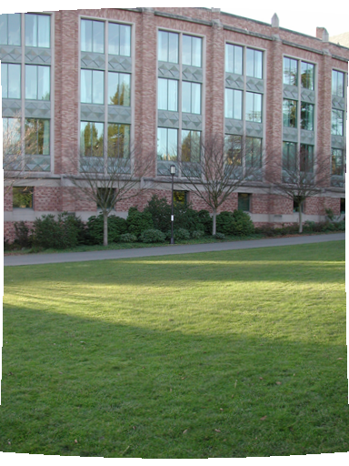

{kind=link}
{kind=link}
{kind=link}
{kind=link}

Dai Bo 1155053920
panorama rdWarp [image_name].tga [output_name].tga [focal_length] [k1] [k2]
e.g. panorama rdWarp im1.tga good_im1.tga 252 0.1 0.001
panorama alignAll [image_list].txt [output_orientation].txt [min_matches] [focal_length] [num_RANSAC_iter] [RANSAC_thre] [num_bundle_adjust_iter] [sift]
e.g. panorama alignAll list.txt orientation.txt 20 595 100 10 8 sift
panorama blendAll [orientation].txt [output_panorama].tga [focal_length] [blend_radius] [blending_function_type]^ [num_pyramid_levels]*
^: 0: straightfoward 1: linear 2: laplacian
*: only useful when using laplacian blending
e.g. panorama blendAll orientation.txt out_img.tga 595 200 1 0
| Original | Corrected |
|  | |
My generation of panorama sometimes only occupys a small region centered on the final image. Although complete, it's too small to see, and I have to crop it out. Maybe it's because I use wrong focal length, or there is some bug in my program.
| Mountain High Resolution Wrapper | The result seems good. | |
| University Railway Station High Resolution Wrapper | There some moving people, leading to ghost effect. We need techniques like graph cut to deal with it. | |
| MS Lobby High Resolution Wrapper | The upper part of the panorama is not aligned very well, possibly because of wrong estimation of focal length. | |
| Piazzanova High Resolution Wrapper | The projection is too small and I have to crop it out, possibly because of wrong estimation of focal length. | |
| PaloAlto High Resolution Wrapper | |
The result seems good. |
In this case, linear blending is good enough, which is efficient yet effective.
| None | Linear | Laplacian |
| Final | Level 4 | Level 3 | Level 2 | Level 1 | Level 0 |